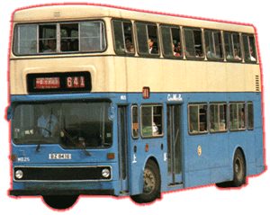

Metro-Cammell
Weymann - Metrobus 11M
 |
車隊編號 Model 引擎 Engine 容積 Engine Capacity 波箱 Gearbox 車身 Body Build 體積 Volume 載客量 Passenger 服役年份 Year |
: MB (1-40) : Gardner 6LXB (180bhp) : 10.45 Liters : Voith DIWA851 (3-Speed Automatic) : Metro-Cammell Weymann : 11450L X 2500W X 4430H(mm) : U78 L48 S11 : 1978 - 2000 |
承接MC巴士的成功，廠方繼續推出11米長的雙層巴士，全球40部都由中巴所擁有。巴士設計以MC巴士為本加以改良，除了將車身加長外，並由單門改為雙車門設計，座椅又改為普通2+3，令載客量大大增加，因為此車載客量大過珍寶，所以便被稱呼為新一代的"超級珍寶巴士"。中巴於1978年開始購入此車系，最初大多數用來行走過海路線，後來因為有其他大型三軸巴士加入，所以有些車便改派到東區走廊快線繼續行走。可能由於此又大又長的車身是用兩車軸的設計，當在過海底隧道時的收費比起三車軸的巴士便宜一點，所以一直經常被往不同過海線行走，由中隧、東隊、至西隧都有過此系的字軌車穿梭來往，直至退役為止。
另外，此車在下雨天時，經常有嚴重打滑情況出現(俗稱冼呔)，可能因為用兩車軸設計，尾輪與地面的磨擦力不勝負荷，而且車尾又比車頭重所造成，而尤其當車子以高速S型入站時，車尾往往會打橫掃向車站，高技術的車長可以把車子在掃到行人路級前停下，險象環生之餘，但又可以欣賞到車長的技術，的確有點矛盾和奇怪。